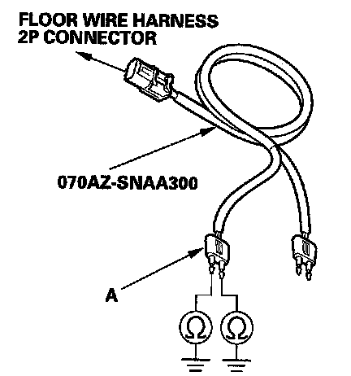

DTC 33-9x
DTC 33-9x ("x" can be 0 thru 9 or A thru F): Short to Ground in Left Side Curtain Airbag InflatorSpecial Tools Required
- SRS inflator simulator 07SAZ-TB4011A
- SRS simulator lead L 070AZ-SNAA300
NOTE: Before doing this troubleshooting procedure, review SRS Precautions and Procedures.
1. Erase the DTC memory.
2. Turn the ignition switch ON (II), and check that the SRS indicator comes on for about 6 seconds and then goes off.
Does the SRS indicator stay on, and is DTC 33-9x indicated?
YES - Go to step 3.
NO - Intermittent failure, the system is OK at this time. Go to Troubleshooting Intermittent Failures. If another DTC is indicated, go to the DTC Troubleshooting Index.
3. Turn the ignition switch OFF. Disconnect the negative cable from the battery, and wait for 3 minutes.

4. Remove the left side quarter pillar trim, then disconnect the floor wire harness 2P connector (A) from the left side curtain airbag connector (B).
5. Connect the SRS inflator simulator (2 ohms connectors) and simulator lead L to the floor wire harness.
6. Reconnect the negative cable to the battery.
7. Erase the DTC memory.
8. Read the DTC.
Is DTC 33-9x indicated?
YES - Go to step 9.
NO - Short to ground in the left side curtain airbag inflator; replace the left side curtain airbag.
9. Turn the ignition switch OFF. Disconnect the negative cable from the battery, and wait for 3 minutes.
10. Disconnect both seat belt tensioner 4P connectors.
11. Disconnect SRS unit connector B (28P) from the SRS unit.
12. Disconnect the SRS inflator simulator from the SRS simulator lead. Do not disconnect the simulator lead from the floor wire harness 2P connector.

13. Measure the resistance between each terminal of the black SRS simulator lead (A) and body ground. There should be an open circuit (ohmmeter reads OL) or at least 1 Mohm.
Is the resistance as specified?
YES - Faulty SRS unit or poor connection at SRS unit connector B (28P) and the SRS unit. Check the connection; if the connection is OK, replace the SRS unit.
NO - Short to ground in the floor wire harness; replace the floor wire harness.